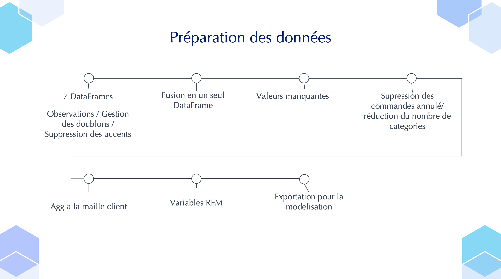
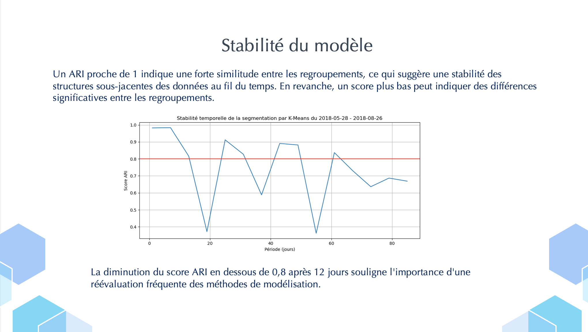
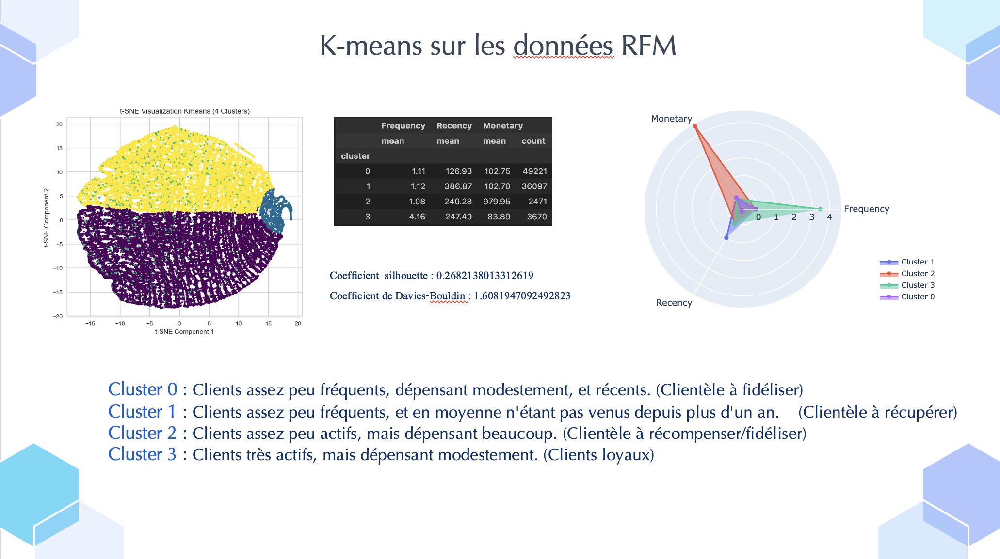

Présentation du projet
Ce projet met en avant les principales étapes réalisées dans le cadre de notre collaboration avec Olist, une plateforme e-commerce. Voici un aperçu des travaux effectués :
-
Création de la Base de Données et Extraction des Données :
Nous avons d'abord conçu la base de données SQL pour Olist, permettant de stocker et organiser les informations nécessaires. Ensuite, nous avons réalisé des requêtes SQL pour extraire les données demandées.
-
Segmentation des Clients :
L'objectif clé de ce projet était de segmenter les clients d'Olist en différents clusters en fonction de leur comportement d'achat et de leurs caractéristiques. Cette segmentation permet de mieux cibler les campagnes marketing et d'optimiser les stratégies commerciales.
-
Maintenance et Mise à Jour du Modèle :
Pour garantir la durabilité et la pertinence du modèle de segmentation client, nous avons également défini une stratégie de maintenance, incluant des recommandations pour la fréquence des mises à jour, assurant ainsi son efficacité dans le temps.
Aperçu des Résultats


